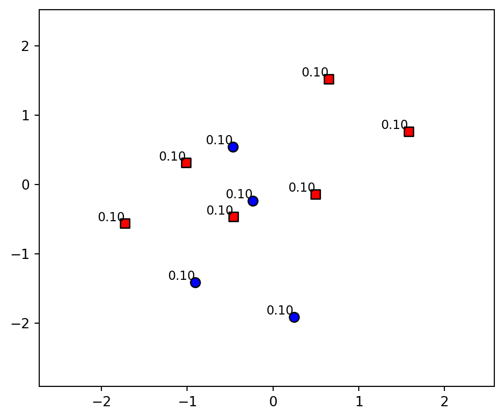
Introduction to Statistical Learning
Boosting - Class 10
Giora Simchoni
gsimchoni@gmail.com and add #intro2sl in subject
Stat. and OR Department, TAU
AdaBoost
Instead of averaging
- Suppose \(y \in \{-1, 1\}\)
- Recall the final Random Forests model: \(\hat{f}(x_0) = \text{sign}\left[\frac{1}{M}\sum_{m = 1}^M T_m(x_0)\right]\)
- Why not \(\hat{f}(x_0) = \text{sign}\left[\sum_{m = 1}^M \alpha_m T_m(x_0)\right]\)?
- If \(M\) is the number of all possible trees \(T_m\), then finding weights \(\alpha_m\) is intractable!
- Boosting finds \(\alpha_m\) sequentially, adaptively:
- Take a weak classifier \(G(x)\) with accuracy slightly better than random
- for any dist. \(P_{T}\) of the training data: \(Err_{P_{T}} = \mathbb{E}_{P_{T}}\left(\mathbb{I}\left[y_i \neq G(x_i)\right]\right) \leq \frac{1}{2} - \gamma\)
- Apply it sequentially over modified (weighted) versions of the training data
- Each time selecting the best \(\alpha_m\) to get: \(\hat{f}(x_0) = \text{sign}\left[\sum_{m = 1}^M \alpha_m G_m(x_0)\right]\)
- Take a weak classifier \(G(x)\) with accuracy slightly better than random
AdaBoost
- Initialize observations weights \(w_i = 1/n\) for \(i = 1, \dots, n\)
- For \(m = 1\) to \(M\):
- Fit classifier \(G_m(x)\) to the training data using weights* \(w_i\)
- Compute weighted classification error: \[err_m = \frac{\sum_{i = 1}^n w_i\mathbb{I}\left[y_i \neq G_m(x_i)\right]}{\sum_{i = 1}^n w_i}\]
- Compute coefficient \(\alpha_m = \ln\left[\frac{1-err_m}{err_m}\right]\)
- Update weights: \(w_i \leftarrow w_i \cdot \exp\left[\alpha_m \cdot \mathbb{I}\left[y_i \neq G_m(x_i)\right]\right]\)
- Output: \(\hat{f}(x) = \text{sign}\left[\sum_{m = 1}^M \alpha_m G_m(x)\right]\)
*What does it mean training a classification tree with weighted data?
AdaBoost Example
AdaBoost with Tree Stumps
Can a tree stump get to \(\overline{err} = 0\)? Can a deep decision tree?
AdaBoost: iteration 1
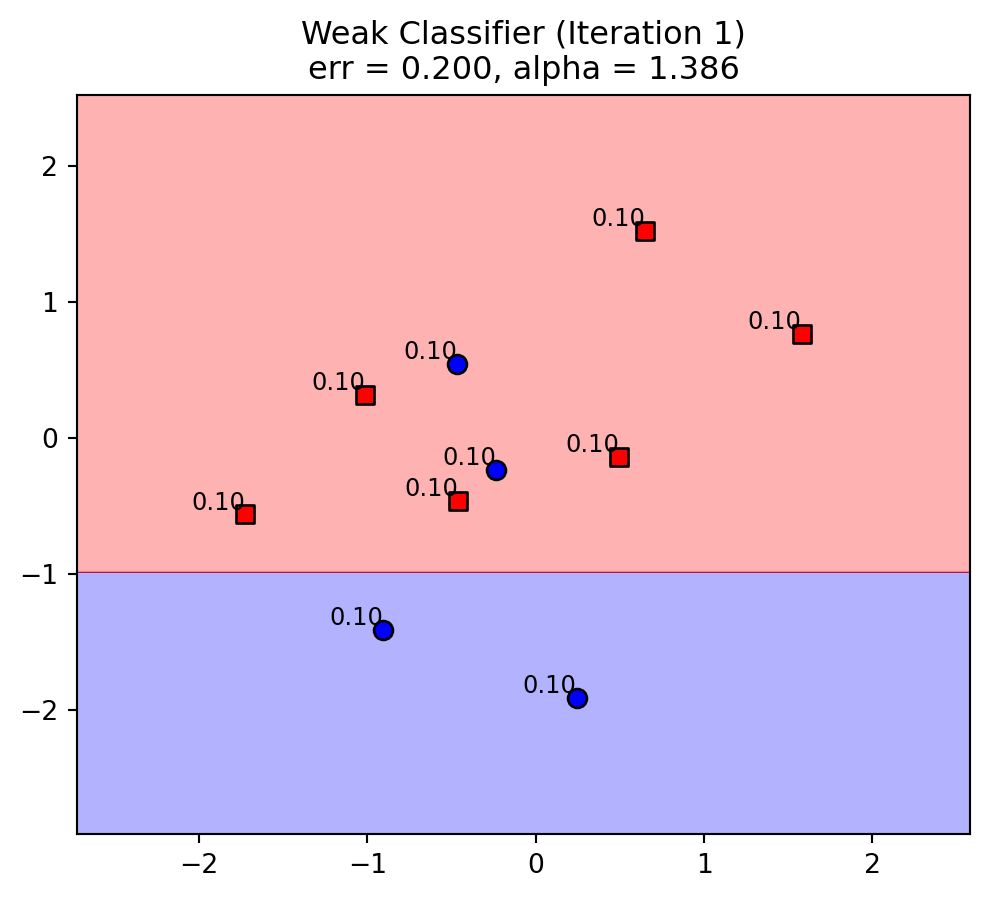
AdaBoost: iteration 2
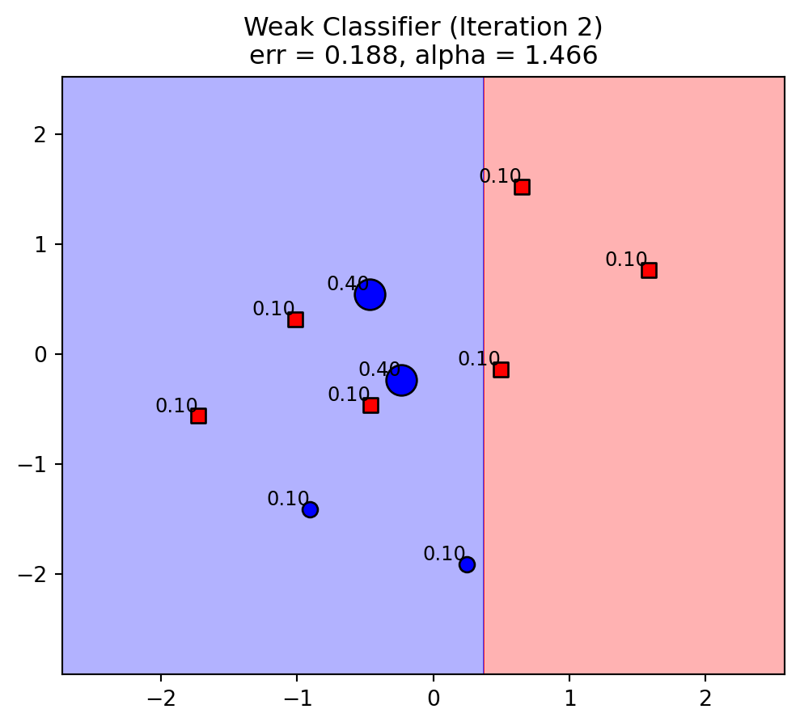
AdaBoost: iteration 3
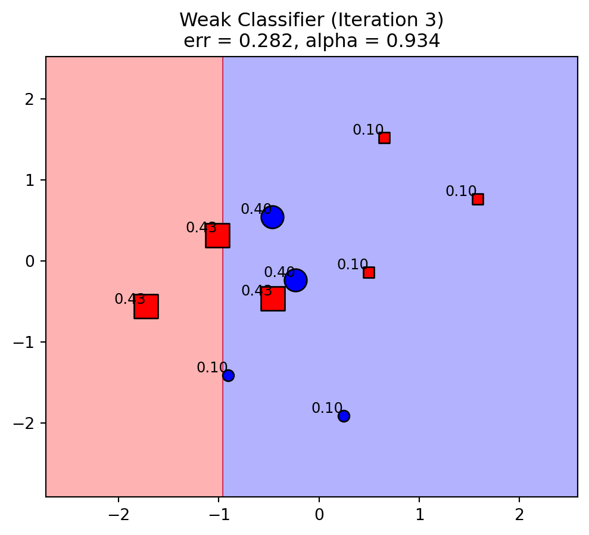
AdaBoost: iteration 4
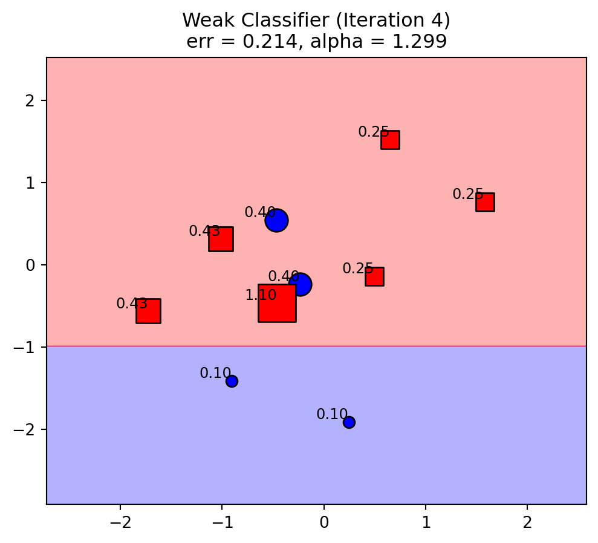
AdaBoost: iteration 5
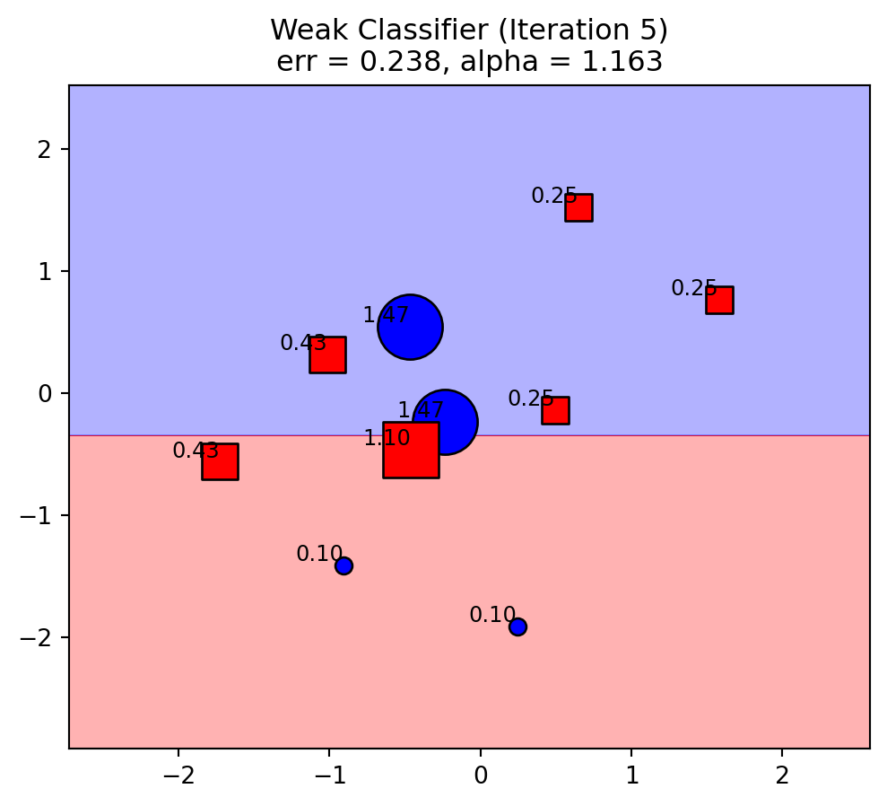
AdaBoost: aggregate
\(\hat{f}(x) = \text{sign}\left[\sum_{m = 1}^M \alpha_m G_m(x)\right] =\)
\(= \text{sign}\left[1.386G_1(x) + 1.466G_2(x) + 0.934G_3(x) + 1.299G_4(x) + 1.126G_5(x)\right]\)
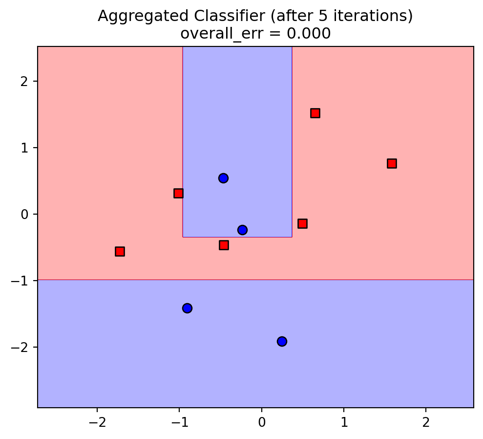
AdaBoost Guarantee
Theorem:
\[\overline{err} = \sum_{i = 1}^n \mathbb{I}\left[y_i \neq \hat{f}(x_i)\right] \le \left(1-4\gamma^2\right)^{M/2} \le e^{-2M\gamma^2}\]
This means for a large enough \(M\) we can get \(\overline{err}\) as low as we want (on training data)!
Specifically, to make the upper bound \(e^{-2M\gamma^2} < \frac{1}{n}\) (i.e. \(\overline{err} = 0\)) \(\Rightarrow M > \frac{\log(n)}{2\gamma^2}\)
A weak classifier which can only guarantee up to 40% error at each iteration (\(\gamma = 0.1\)):
after \(M = 100\) iterations will be boosted to give \(\overline{err} = (1 - 4 \cdot 0.1^2)^{(100/2)} = 0.96^{50} \approx 0.13\) error
if \(n = 1000\), need \(M > \log(1000) / 2 \cdot 0.1^2 \approx 345\) iterations to get \(\overline{err} = 0\)
Really nice proof in Freund & Schapire (1997)
AdaBoost as Additive Stagewise Modeling
Questions from AdaBoost
Does it optimize a specific loss? Can we plug-in a different loss?
What about regression?
What about \(K\)-class classification?
Is there a probabilistic justification? A likelihood-based approach?
AdaBoost sure sounds familiar
Recall: Forward stagewise regression
- Standardize all features, input some \(\tau_{thresh} \in (0, 1)\) and \(\varepsilon > 0\) step size
- Residual \(\mathbf{r} = \mathbf{y} - \bar{y}\), \(\beta_1, \dots, \beta_p = 0\)
- Find the predictor \(\mathbf{x}_j\) most correlated with \(\mathbf{r}\), and let \(\tau = Corr(\mathbf{r}, \mathbf{x}_j)\)
- While \(|\tau| > \tau_{thresh}\):
- Update \(\beta_j \leftarrow \beta_j + \delta_j\), where \(\delta_j = \varepsilon \cdot \text{sign}(\tau)\)
- Update \(\mathbf{r} \leftarrow \mathbf{r} - \delta_j\mathbf{x}_j\)
- Find the predictor \(\mathbf{x}_j\) most correlated with \(\mathbf{r}\), and let \(\tau = Corr(\mathbf{r}, \mathbf{x}_j)\)
A general forward stagewise additive model (FSAM)
- Initialize \(f_0(x) = 0\)
- For \(m = 1\) to \(M\):
- Compute: \[(\beta_m, \gamma_m) = \arg\min_{\beta, \gamma} \sum_{i = 1}^n L\left(y_i, f_{m-1}(x_i) + \beta b(x_i, \gamma)\right)\]
- Set \(f_m(x) = f_{m - 1}(x) + \beta_m b(x; \gamma_m)\)
- Output: \(\hat{f}(x) = \sum_{m = 1}^M \beta_m b(x; \gamma_m)\)
If \(L\) is the squared loss, and finding \(\gamma_m\) is finding the \(j\)-th predictor \(\mathbf{x}_j\) most correlated with with the residual
\(\Rightarrow\) this is forward stagewise regression!
Claim: AdaBoost is also a FSAM
- If \(L\) is the exponential loss: \(L(y, f(x)) = \exp(-yf(x))\)
- And, \(b(x; \gamma_m) = Gm(x)\)
- We get AdaBoost!
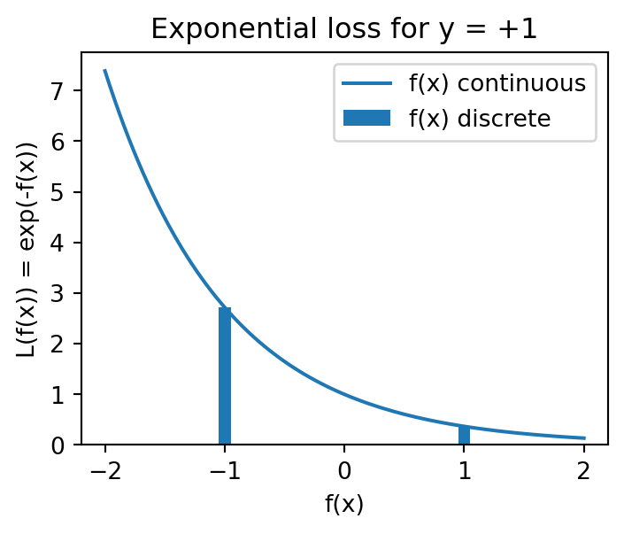
Fast forward: plug-in other loss functions!
Showing AdaBoost is FSAM
Recall the goal in FSAM iteration \(m\): \[(\beta_m, \gamma_m) = \arg\min_{\beta, \gamma} \sum_{i = 1}^n L\left(y_i, f_{m-1}(x_i) + \beta b(x_i, \gamma_)\right)\]
For exponential loss: \[(\beta_m, G_m) = \arg\min_{\beta, G} \sum_{i = 1}^n \exp\left[-y_i(f_{m-1}(x_i) + \beta G(x_i))\right]\]
\(= \arg\min_{\beta, G} \sum_{i = 1}^n \exp\left[-y_if_{m-1}(x_i)\right]\exp\left[\beta G(x_i)\right]\)
\(= \arg\min_{\beta, G} \sum_{i = 1}^n w_i^{(m)}\exp\left[-\beta y_i G(x_i)\right]\)
Getting \(G_m\)
- Assuming \(\beta > 0\), separate the criterion to “correct” + “incorrect” sums:
\(\sum_{i = 1}^n w_i^{(m)}\exp\left[-\beta y_i G(x_i)\right] = e^{-\beta}\sum_{i = 1}^n w_i^{(m)}\mathbb{I}\left[y_i = G(x_i)\right] + e^{\beta}\sum_{i = 1}^n w_i^{(m)}\mathbb{I}\left[y_i \neq G(x_i)\right]\)
- Can also write as:
\(= (e^{\beta} - e^{-\beta})\sum_{i = 1}^n w_i^{(m)}\mathbb{I}\left[y_i \neq G(x_i)\right] + e^{-\beta}\sum_{i = 1}^n w_i^{(m)}\)
- AdaBoost stage 2a: \(G_m\) minimizing the criterion is minimizing weighted error rate: \[G_m = \arg\min_G \sum_{i = 1}^n w_i^{(m)}\mathbb{I}\left[y_i \neq G(x_i)\right]\]
Getting \(\alpha_m\)
\(\text{criterion} = (e^{\beta} - e^{-\beta})\sum_{i = 1}^n w_i^{(m)}\mathbb{I}\left[y_i \neq G(x_i)\right] + e^{-\beta}\sum_{i = 1}^n w_i^{(m)}\)
\(\frac{\partial \text{criterion}}{\partial \beta} = (e^{\beta} + e^{-\beta})\sum_{i = 1}^n w_i^{(m)}\mathbb{I}\left[y_i \neq G(x_i)\right] - e^{-\beta}\sum_{i = 1}^n w_i^{(m)} \to =0\)
- Multiply by \(e^\beta\):
\((1 + e^{2\beta}) = \frac{\sum_{i = 1}^n w_i^{(m)}}{\sum_{i = 1}^n w_i^{(m)}\mathbb{I}\left[y_i \neq G(x_i)\right]} = \frac{1}{err_m}\)
- Take \(ln\), we get AdaBoost stages 2b and 2c:
\(\beta_m = \frac{1}{2}\ln\left[\frac{1-err_m}{err_m}\right] = \frac{1}{2}\alpha_m\)
Getting \(w_i\)
- FSAM says:
\(f_m(x) = f_{m - 1}(x) + \beta_m b(x; \gamma_m) = f_{m - 1}(x) + \beta_m G_m(x) = f_{m - 1}(x) + \frac{1}{2}\alpha_m G_m(x)\)
- Which means next iteration weights are:
\(w_i^{(m + 1)} = \exp\left[-y_if_{m+1}(x_i)\right] = \exp\left[-y_i(f_{m}(x) + \frac{1}{2}\alpha_m G_m(x))\right] = w_i^{(m)}\cdot\exp\left[-\frac{1}{2}\alpha_m y_i G_m(x)\right]\)
- Given that \(-y_i G_m(x_i) = 2\cdot\mathbb{I}\left[y_i \neq G_m(x_i)\right] - 1\), we can write:
\(w_i^{(m + 1)} = w_i^{(m)} \cdot \exp\left[\alpha_m \cdot \mathbb{I}\left[y_i \neq G_m(x_i)\right]\right] \cdot Const\)
- Equivalent to AdaBoost stage 2d.
Classification losses
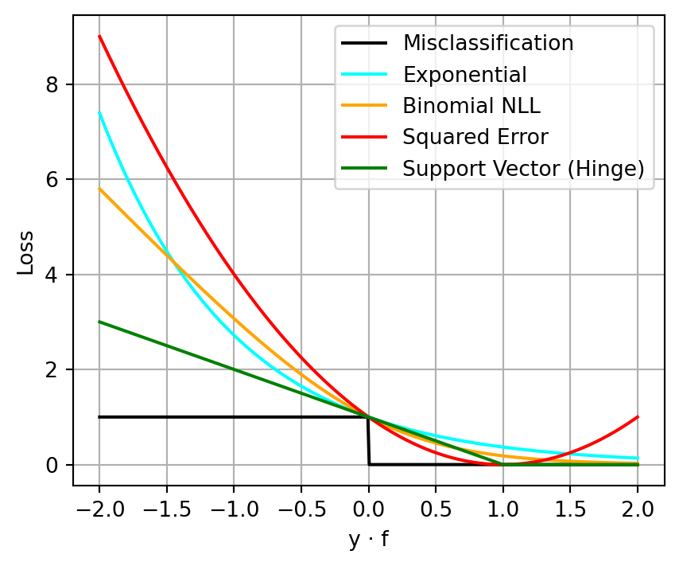
The \(f(x)\) minimizing exponential loss is also minimizing Binomial negative log-likelihood!
Misclassification (0/1 loss):
\(L_{\text{misclass}}(y, f) = \begin{cases} 0 & \text{if } y \cdot f(x) > 0 \\ 1 & \text{otherwise} \end{cases}\)
Exponential loss:
\(L_{\text{exp}}(y, f) = \exp(-y \cdot f(x))\)
Binomial negative log-likelihood (cross-entropy):
\(L_{\text{bin}}(y, f) = \log(1 + \exp(-2 \cdot y \cdot f(x))) / \log(2)\)
Squared error loss:
\(L_{\text{sq}}(y, f) = (1 - y \cdot f(x))^2\)
Support vector (hinge Loss):
\(L_{\text{hinge}}(y, f) = \max(0, 1 - y \cdot f(x))\)
Boosting for Regression
Recap
What the FSAM framework got us:
\[(\beta_m, \gamma_m) = \arg\min_{\beta, \gamma} \sum_{i = 1}^n L\left(y_i, f_{m-1}(x_i) + \beta b(x_i, \gamma)\right)\]
- Classification:
- \(y \in \{-1, 1\}\), exponential loss, \(b(x_i, \gamma)\) are weak learners \(G(x)\) \(\to\) AdaBoost
- Regression:
- \(y \in \mathbb{R}\), squared error loss, \(b(x_i, \gamma)\) are single features \(\mathbf{x}_j\) \(\to\) Forward stagewise regression
- What if we want to boost weak learners \(G(x)\) for regression?
Boosted trees for regression
- Specifically, let us focus on boosting trees: \(f(x) = \sum_{m = 1}^M T(x, \Theta_m)\)
- Where \(T(x, \Theta) = \sum_{j = 1}^J \gamma_j\mathbb{I}\left(X \in R_j\right)\)
- With parameters \(\Theta = \{R_j, \gamma_j\}_1^J\)
- With squared loss, no problem:
\(\Theta_m = \arg\min_{\Theta} \sum_{i = 1}^n L\left(y_i, f_{m-1}(x_i) + T(x_i, \Theta)\right) = \arg\min_{\Theta} \sum_{i = 1}^n\left(y_i - f_{m-1}(x_i) - T(x_i, \Theta)\right)^2\)
\(= \arg\min_{\Theta} \sum_{i = 1}^n\left(r_{im} - T(x_i, \Theta)\right)^2\)
- Because we know how to build such trees!
- That is, at each iteration \(m\) build standard regression tree \(T(x, \Theta)\) which best fits the current residuals \(\mathbf{r}_m\)
At high-level, similar to AdaBoost!
What about more robust losses?
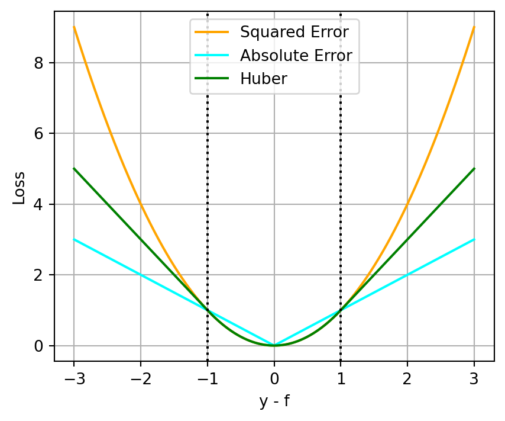
Squared Error Loss:
\(L_{\text{sq}}(y, f) = (y - f(x))^2\)
Absolute Error Loss:
\(L_{\text{abs}}(y, f) = |y - f(x)|\)
Huber Loss:
\(L_{\text{H}}(y, f) = \begin{cases} (y - f(x))^2 & |y - f(x)| \leq \delta \\ 2\delta |y - f(x)| - \delta^2 & \text{otherwise.} \end{cases}\)
Gradient Boosting
Gradient descent algorithms
Minimize a function \(J(\theta)\) by moving in the opposite direction of the gradient: \[\hat\theta_{i+1} = \hat\theta_i - \varepsilon \frac{\partial J(\theta)}{\partial \theta}\]
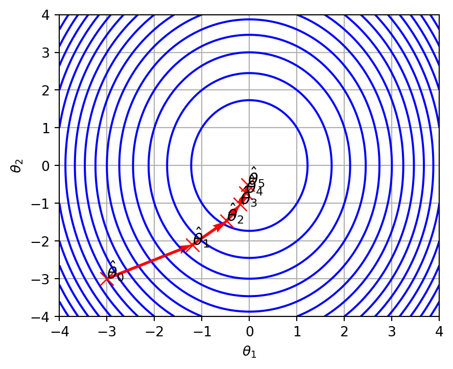
Gradient Boosting Machines
- Consider any loss \(L(y, \mathbf{f})\) a function of \(n\) data points \(\mathbf{f} = (f(x_1), \dots, f(x_n))\)
- At each iteration \(m\), calculate the gradient of \(L\) by \(\mathbf{f}\), evaluated at \(\mathbf{f}_{m - 1}\): \[\mathbf{g}_m = \frac{\partial L(y, \mathbf{f})}{\partial \mathbf{f}}\Bigr|_{\mathbf{f} = \mathbf{f}_{m - 1}}\]
- Move a small step \(\varepsilon\) down this gradient: \[\mathbf{f}_m = \mathbf{f}_{m - 1} - \varepsilon\mathbf{g}_m\]
- Technically, \(\varepsilon\) can also be optimized at each iteration \(m\) to minimize \[\varepsilon_m = \arg\min_\varepsilon L(y, \mathbf{f}_{m - 1} - \varepsilon\mathbf{g}_m)\]
Gradient Boosting Machines
- Eventually we would get: \[\mathbf{f}_M = \sum_{i = 1}^M\varepsilon_m(-\mathbf{g}_m)\]
- But we are not interested in \(\mathbf{f}_M\) for our training data, we wanted a model!
- E.g. \(f(x) = \sum_{m = 1}^M T(x, \Theta_m)\)
- Solution: at each iteartion \(m\) approximate the negative gradient \(-\mathbf{g}_m\) with a weak learner or regression tree! \[\Theta_m = \arg\min_\Theta \sum_{i = 1}^n (-g_{im} - T(x_i, \Theta))^2\]
Gradients of common loss functions
| setting | loss | gradient |
|---|---|---|
| Regression | \(\frac{1}{2}(y_i - f(x_i))^2\) | \(y_i - f(x)\) |
| Regression | \(|y_i - f(x_i)|\) | \(\text{sign}(y_i - f(x))\) |
| Regression | Huber | \(\begin{cases} y_i - f(x) & \text{if } |y - f(x)| \leq \delta \\ \delta\text{sign}(y_i - f(x)) & \text{otherwise} \end{cases}\) |
| Classification* | NLL | \(\mathbb{I}\left[y_i = 1\right] - \hat{p}_i\) |
*Here \(y \in \{0, 1\}\) and \(\hat{p}_i = \frac{\exp(\hat{y}_i)}{1 + \exp(\hat{y}_i)} = \frac{\exp(f_{m - 1}(x_i))}{1 + \exp(f_{m - 1}(x_i))}\)
Notice for (half) squared loss the gradient is the residuals, as we got earlier.
Gradient Boosting Trees (simplified)
- Initialize \(f_0(x) = \arg\min_\gamma \sum_{i = 1}^n L(y_i, \gamma)\) (e.g. \(f_0(x) = \bar{y}\))
- For \(m = 1\) to \(M\):
- Compute pseudo-residuals: \[\mathbf{r}_m = -\left[\frac{\partial L(y, \mathbf{f})}{\partial \mathbf{f}}\right]_{\mathbf{f} = \mathbf{f}_{m - 1}}\]
- Fit a regression tree to data \((\mathbf{x}, \mathbf{r}_m)\), giving \(T(x, \Theta_m)\)
- Update: \(f_m(x) = f_{m - 1}(x) + \varepsilon T(x, \Theta_m)\)
- Output: \(\hat{f}(x) = \sum_{m = 1}^M \varepsilon T(x, \Theta_m)\)
What parameters need tuning?
Example: credit data
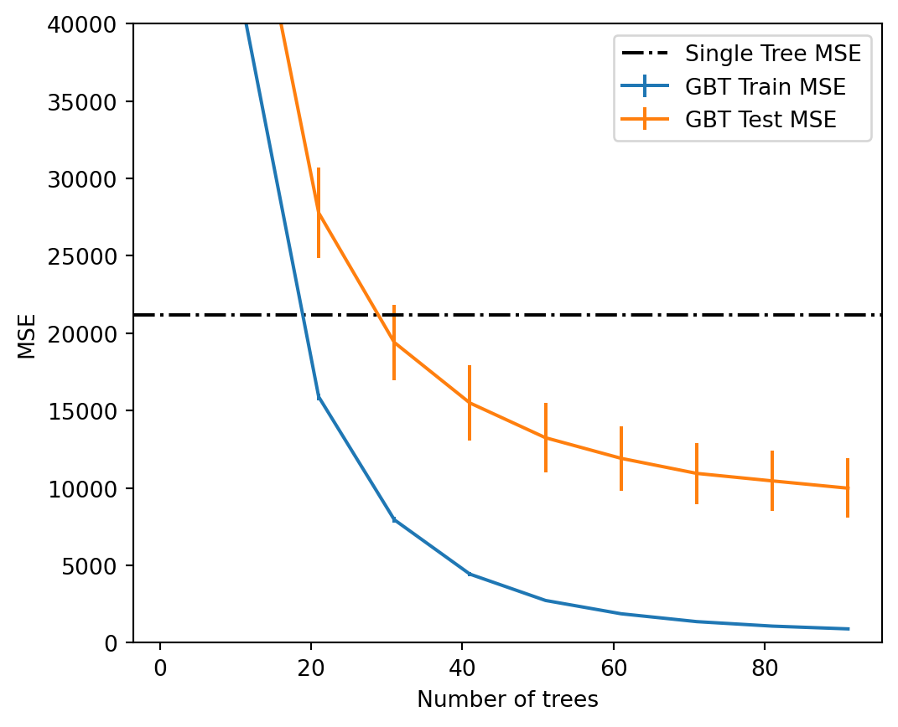